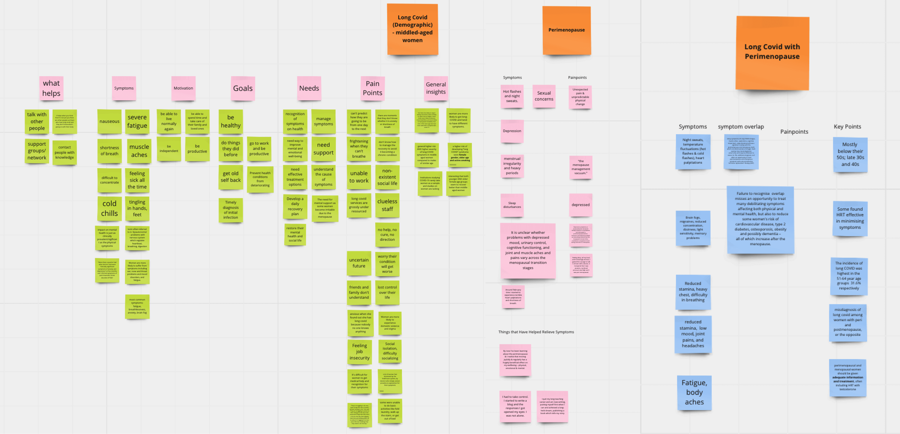
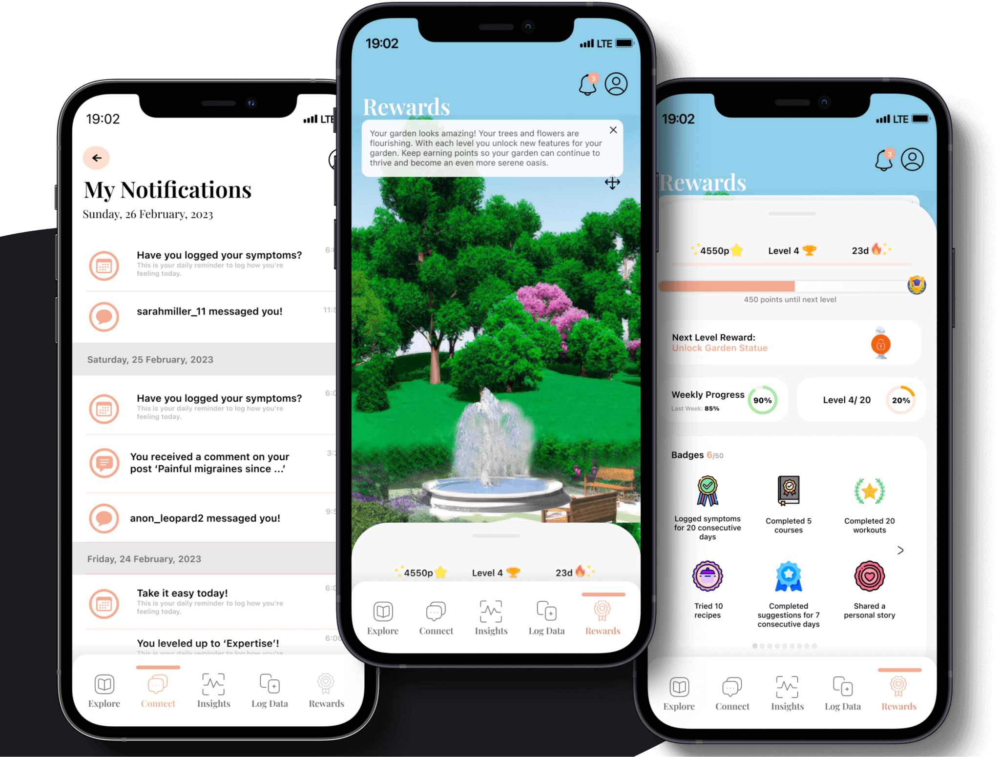
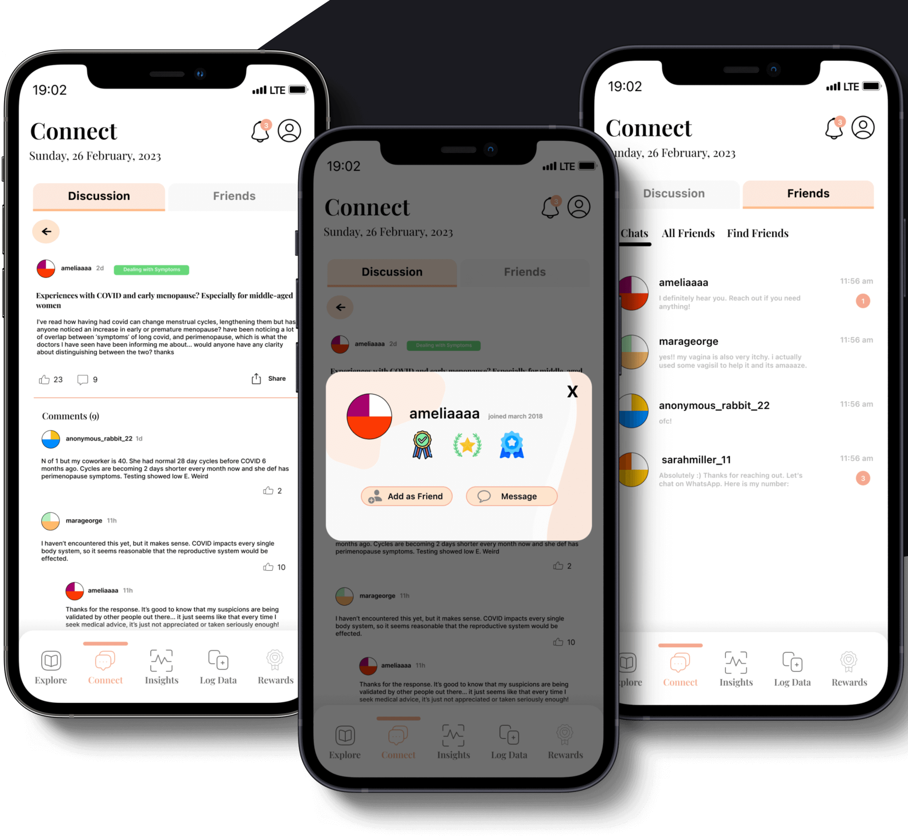
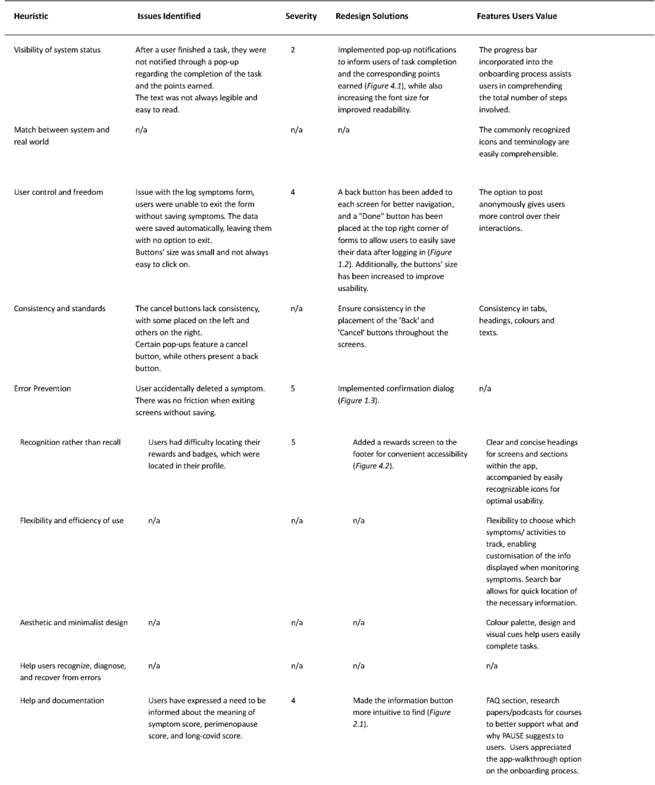
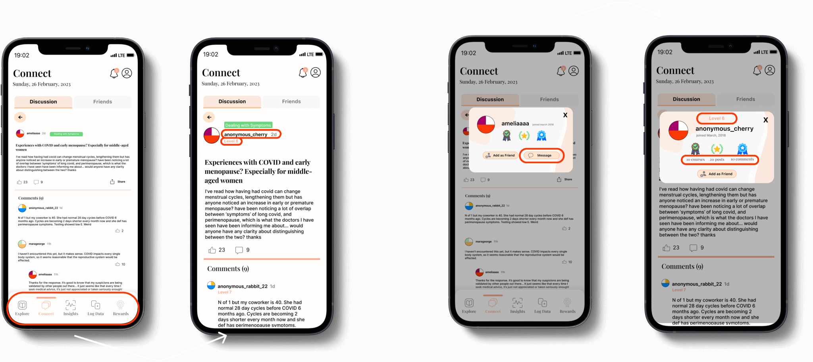

Background
The team researched Long Covid (LC) to understand the condition and explore digital interventions for patients. Our findings revealed that middle-aged women are at higher risk of LC symptoms, which can overlap with perimenopause (PM) signs like fatigue, brain fog, anxiety, and headaches. LC may also affect women's menstrual cycles, possibly due to ovarian hormone production. These shared symptoms can lead to misdiagnosis, as perimenopausal women may be mistaken for having LC and vice versa. Healthcare professionals often lack awareness of these overlaps, leading to improper treatment.
User Research
Methodology
As the fist step, our group of six started by researching health management apps, behavior change theories, and target users. To gain a better understanding of the conditions and target users, we conducted secondary research using personal stories, interviews, vlogs, and videos of individuals who had experienced LC, PM, or both.
Insights
Research findings were organized into a shared Miro affinity diagram, and a bottom-up approach was used for analysis. Each researcher created codes for symptoms, goals, pain points, and needs.

The codes generated from the bottom-up analysis were used to identify overarching themes that informed the creation of our user personas.
Our user research revealed that users with different backgrounds and lifestyles have varying needs. To reflect this, we developed three user personas: a married medical professional career woman, a lonely divorced single mother, and a health-anxious mother with a teenage child. Throughout the project, we frequently revisited these personas to remind ourselves of our users' needs and frustrations and to maintain a user-centric focus.

To better understand the potential needs of our users and determine the functional requirements for our digital intervention, we created user scenarios that we could refer back to throughout the project. These scenarios were also instrumental in keeping us focused. They helped us envision how our users might use the intervention and what their primary goals would be. For instance, one user scenario features Abigail, an introverted woman who feels isolated. For Abigail, the main motivation for using our app would be to connect with others and read or talk about experiences similar to hers.
The scenarios were used to create an initial set of requirements. However, with too many requirements, an evaluation matrix was used to prioritize based on feasibility, desirability, and impact on health.
To develop user requirements for our app, we studied various health behavior and digital intervention theories. The Persuasive System Design model was the best match for our application's goals, as it explains how software design and communication elements can encourage the adoption and maintenance of desired health-related behaviors.
Ultimately, we developed a final set of user requirements that best meet the aims of our application:
- A detailed yet user-friendly symptom, activity, nutrition, and menstrual cycle tracking tool.
- Clear data visualisation of the user’s health progress that can be exported and shared.
- Personalized and customisable notifications that encourage the user to regularly input health data.
- A community feature that allows users to interact and connect with other women with similar lived experiences.
- Educational resources retrieved from validated empirical sources that are provided in an interactive and accessible format.
Design Rationale
How might we design a health management application that helps middle-aged women accurately differentiate between symptoms of Long COVID and Perimenopause, track their symptoms and receive appropriate treatment?
After finalizing user requirements, research and design teams were formed. As a member of the design team, we used task analysis to select necessary features aligned with user requirements, avoiding unnecessary complexities. Healthcare task analysis should account for users' roles in various environments and include features that suit their abilities. We employed a "how might we" approach and a crazy 8s sprint to brainstorm designs.
Through dot voting, we narrowed our scope to the wireframes that we considered to best fit our user requirements, followed by the creation of mid-fidelity versions of our selected screens.
After considering the Persuasive System Design model, we iterated on our mid-fidelity wireframes and developed mid-to-high fidelity mockups. These grayscale mockups include all interactive elements and real content, providing an accurate representation of the final product. This approach allowed us to focus on layout and functionality without the distraction of colors, facilitating feedback on structure, content, and user flow before finalizing the visual design.
Primary Task Support:
Self-monitoring:
Users can log, update, and monitor activity, nutrition, and symptoms related to PM and LC, including severity and personal notes.
Personalisation:
Users can customize tracked symptoms, notifications, explore educational content, and profile page with their health data.
Reduction:
Easy symptom tracking through reminders and simple data entry tools, providing visual and data-based feedback. Reports can be downloaded and shared with healthcare providers for accurate diagnosis and shared care.

Dialogue Support
Rewards:
We used gamification techniques, inspired by Wheel of Sukr, to motivate healthier behaviors. Users earn points by completing tasks, following suggestions, sharing stories, and logging symptoms, which grow a virtual garden.
Reminders:
Users receive notifications to consistently log symptoms and menstrual cycle changes.
Suggestions:
The app provides activity suggestions to alleviate symptoms.
Liking:
The app features an appealing and sleek color scheme for women.
Social Support:
Social comparison:
Users can compare engagement levels by viewing earned badges.
Normative influence:
The app creates a community for women with similar health conditions/symptoms of PM and LC to share advice and stories.
Cooperation:
The 'connect' feature facilitates cooperation through questions, blogs, and discussions.
Recognition:
Public recognition is given through the badge rewards system, allowing users to observe others' engagement levels.

System Credibility Support:
Trustworthiness:
The app offers evidence-based information from peer-reviewed sources and uses validated questionnaires for symptom status during onboarding.
Expertise:
All information is sourced from relevant medical experts.
Verifiability:
Information is verifiable through external resources and referenced within the application for users to check.
Surface credibility:
The app has a credible, professional look and feel.
User Testing
Methodology
We used a user-testing approach guided by the Persuasive System Design Model to ensure high usability and user-friendliness. A usability study was conducted with 8 female participants aged 22 to 50. Tasks related to onboarding, symptom logging, community engagement, resource discovery, and insights evaluation were performed. The high-fidelity app version was evaluated using Nielsen heuristics and user behavior observations. Interviews were conducted for additional feedback, leading to updates and issue resolution.
Insights
In user testing, I identified and addressed problems or issues users encountered. By applying heuristics, I identified violations causing delays or task incompletions. Redesign proposals were made for an improved user experience. Actively listening during the think-aloud study helped match liked features to relevant heuristics, offering valuable insights and informing future design decisions.

After collecting feedback from the participants through interviews, think aloud studies and heuristic evaluations, we identified some key issues that needed to be addressed based on the tasks at hand. One of the main issues was the need to increase the size of the text and buttons for better navigation, while also making actions more intuitive. To ensure that we addressed all necessary changes, we revised our mockups accordingly.
Prototyping
Primary Task Support
Log Symptoms Logging symptoms should be easy and frictionless. Thus, we made deletion more intuitive and reduced the number of clicks in logging a new symptom.
Primary Task Support
Insights ‘Log Symptoms’ was added to the Insights page for users to easily update their symptom data
Social Support
To promote a safe environment, participants suggested to anonymise all users, remove easy sharing, and have a privacy setting restricting chats from ‘Friends’. Furthermore, ‘Levels’ were made visible so others can identify users’ engagement and removed footer for single articles so users can read it better.

Points and Rewards
A pop-up notification was added to inform users of task completion and the points earned. This is expected to encourage users to engage more actively.
Points and Rewards
Dialogue Support: Participants liked the notifications feature deeming it helpful.
System Credibility Support
Participants agreed that the ‘Research Papers’ on ‘Explore’ provided immediate credibility to the information provided.
This project involved designing a compelling digital intervention for behavior change. We useds secondary research to identify effective frameworks and theories, saving time and gaining user insights. However, recruiting representative participants for usability testing was challenging, potentially affecting feedback accuracy. Time constraints limited testing focus on design rather than engagement and effectiveness. Relying heavily on PSDM may have limited our understanding of complex behaviors and impacted app effectiveness. For future projects, I would conduct primary research, use representative samples, and employ alternative testing methods like diary studies and autoethnography. Ensuring initial user testing evaluates trustworthiness would be crucial for mobile medical technology, addressing critical safety and privacy concerns.